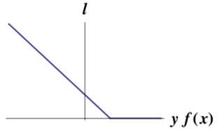
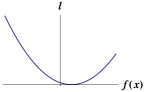
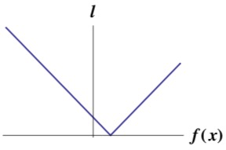

loss function
$$J(\theta)=\frac{1}{2m}\sum_{i=1}^{m}(h_\theta(x^{(i)})-y^{(i)})^2$$
Hinge loss
$$l(y^{(i)}, h_\theta(x^{(i)})) = max(0, y^{(i)}*h_\theta(x^{(i)}))$$

the more you violate the margin, the higher the penalty is. -- works well for its purposes in SVM as a classfier
square loss
$$l(y^{(i)}, h_\theta(x^{(i)})) = (y^{(i)} - h_\theta(x^{(i)}))^2$$

Absolute loss
$$l(y^{(i)}, h_\theta(x^{(i)})) = |y^{(i)} - h_\theta(x^{(i)})|$$

Reference:
http://courses.cms.caltech.edu/cs253/slides/cs253-14-GPs.pdf